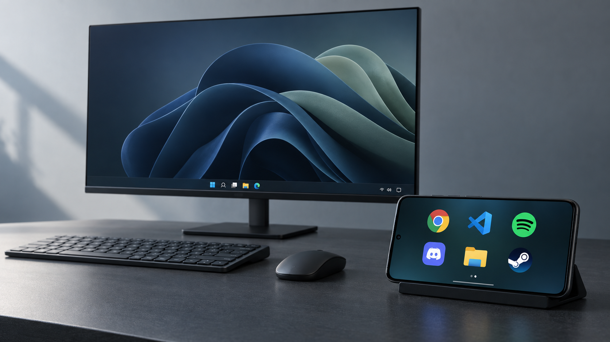

Your apps. Right there.
Chrome, Spotify, your code editor. Pin the Windows apps you use, with their real icons. One tap opens them on your PC.
AN OLD PHONE. A NEW DESK COMPANION.
Your favorite Windows apps, on the phone beside you.
A touchpad when you need it. Your keyboard. Your signature.
Windows + Android · Wi-Fi or USB · No account needed
Try the touchpad, open its keyboard, or draw a signature. This demo stays in your browser; PC actions, saves and captures are simulated.
02 / LESS REACHING. MORE DOING.
That phone sitting in a drawer still has a lot to give. Put it next to your keyboard. Give your everyday apps a place of their own.
A second life looks good on it.
Chrome, Spotify, your code editor. Pin the Windows apps you use, with their real icons. One tap opens them on your PC.
Four big icons, or room for eight. Your background, your layout. Hold to rearrange. Swipe over for a fresh page.
Turn the volume down. Skip that song. Pause for a minute. The little controls you reach for, without leaving your work.
Take a screenshot or record your main monitor from the drawer. PNG images and silent MP4 videos, saved straight to your PC.
Turn the whole phone into a touchpad. Move, click, drag, scroll with two fingers, and pinch to zoom in supported PC apps. A blue glow follows your touch.
Click a supported text field on your PC and type with your Android keyboard, emoji included. Open it yourself with the keyboard button whenever you need it.
Draw a signature with your finger or stylus. Save a transparent PNG to your PC, or insert it into an app that accepts pasted images.

A DIRECT CONNECTION
Your phone talks directly to your PC over your local network.
Pair with a PIN. No account to create. No cloud in between.
03 / FROM DOWNLOAD TO DESK
A Windows PC. An Android phone.
Wi-Fi or a USB cable. You’re all set.
Open WinDockSetup.exe. The installer takes care of the files and adds WinDock to your Start menu.
Get the Windows appInstall the Android APK. Connect over the same Wi-Fi, or use a data cable with USB tethering. Choose Wi-Fi or USB in WinDock.
Get the Android appEnter the PIN from Show connection info in the PC tray menu. Turn your phone sideways, swipe up, and pin your favorites.
Need a hand?04 / MAKE SOME ROOM
One companion for your PC. One new job for your phone.
CURRENT RELEASE · 0.2.2-preview.1Your quiet companion in the system tray.
The whole dock starts here.
Open WinDockSetup.exe and follow the installer. WinDock appears in your Start menu and Windows system tray. Everything it needs is included. Starting with Windows is optional.
The installer is unsigned. Windows may show a publisher warning. Only run a copy you trust. If prompted for network access, allow it on your private home network.
One phone. A whole new workspace.
Made for a sideways point of view.
Download the APK on your Android phone and open it. Android may ask you to allow installation from your browser or file manager.
Previous public Android previews use a different signing key: uninstall the old app first, install this APK, then pair again. Phone-only preferences reset; your PC dock stays. Recent local test builds with the same key can update directly.
A place for your iPhone, too. An iOS companion is planned; no release date yet.
Checking available downloads…
Windows installer: unsigned. Android app: debug-signed. Update both apps for USB and phone display controls. Previous public Android previews need uninstalling before the new APK.
SHA-256 checksums05 / GETTING BETTER, TOGETHER
A record of what’s new, what’s fixed, and how WinDock is growing.
Plug in. Let your screen rest.
Thanks to waly-git for suggesting USB and screen protection.
Release notes & downloadsNow playing. Always up to date.
Thanks to Peter-KIbe for reporting the playback issue.
Release notes & downloadsA touchpad. A keyboard. Your signature.
A new home for your Windows apps.
Found a bug? Report an issue
06 / GOOD TO KNOW
The Windows companion runs on your PC. On your phone, use the Android app for the fullscreen experience, or open the address shown by the Windows tray in a browser. Both connect to the same dock.
Yes. Use a data-capable cable, enable USB tethering in Android Settings, then select Connect by USB → Find USB PC. Enter the normal PIN from the Windows tray. No USB debugging is required. For wireless, select Connect by Wi-Fi. Tethering can share mobile data with Windows; turn mobile data off if unwanted.
Open This phone on the connection screen or Appearance → This phone · screen & sleep in the dock. Choose idle dimming and screen rest. At a timed limit the dock goes black and lets Android sleep; the phone’s own screen timeout may add a delay. These controls reduce prolonged display exposure but cannot guarantee burn-in prevention.
WinDock is made for your local network. Keep your phone and PC on the same trusted network. It doesn’t include an internet remote-access service.
The test app supports Android 7.0 and newer. Update Android System WebView if the interface has trouble loading, then turn the phone sideways for the dock.
Check that WinDock is running in the Windows tray and both devices are on the same network. Open Show connection info and enter that address manually on the phone. Guest Wi-Fi and firewall settings can prevent devices from seeing each other.
Swipe up and open Apps to pin your favorites. New pages appear as you add more than your chosen four, six, or eight icons. Hold to rearrange, and drag an icon to the edge to move it between pages.
Yes. An iOS companion is planned, using the same dock interface and local connection to your Windows PC. It is not available to download yet, and there is no release date.
Open Touch & sign in the drawer. In the Android app, supported PC text fields can open your phone keyboard automatically; the keyboard button is always available as a fallback. Words arrive when your keyboard commits them. Signatures are handwritten images: save a PNG, or paste into a PC app that accepts images. The website demo only simulates these actions.
Starting with 0.2.1-preview.1, WinDock checks at startup and shows a notification if a newer Windows release is available. You can also choose Check for updates from the tray. Download the installer, quit WinDock, and run it; your dock settings are kept. Reconnect your phone afterwards. Older Windows versions need one manual update first. For 0.2.2-preview.1, update Android too: uninstall previous public previews, install the new APK, and pair again.
Quit WinDock from the PC tray, then run the new Windows installer; your dock settings are kept. Install the new Android APK too. Previous public previews used a different signing key, so Android requires uninstalling the old app first, then installing and pairing again. Phone-only preferences reset; the dock on your PC is preserved. The recent local test APK can update directly.
The Windows installer is unsigned and the Android APK is debug-signed. Both builds have passed automated checks, but Windows focus behavior and some device-specific controls are still being tested. An Android build signed with a different key may require uninstalling the previous one first.
Optional visitor stats help us improve this website. Analytics stays off until you allow it.
Vercel Analytics records page views, referrers, approximate location and browser/device information, without analytics cookies. We remove query strings and fragments from page URLs. Your dock and its data stay private.
We remember your choice in this browser. Change it anytime using Analytics preferences in the footer. Vercel’s privacy details ↗